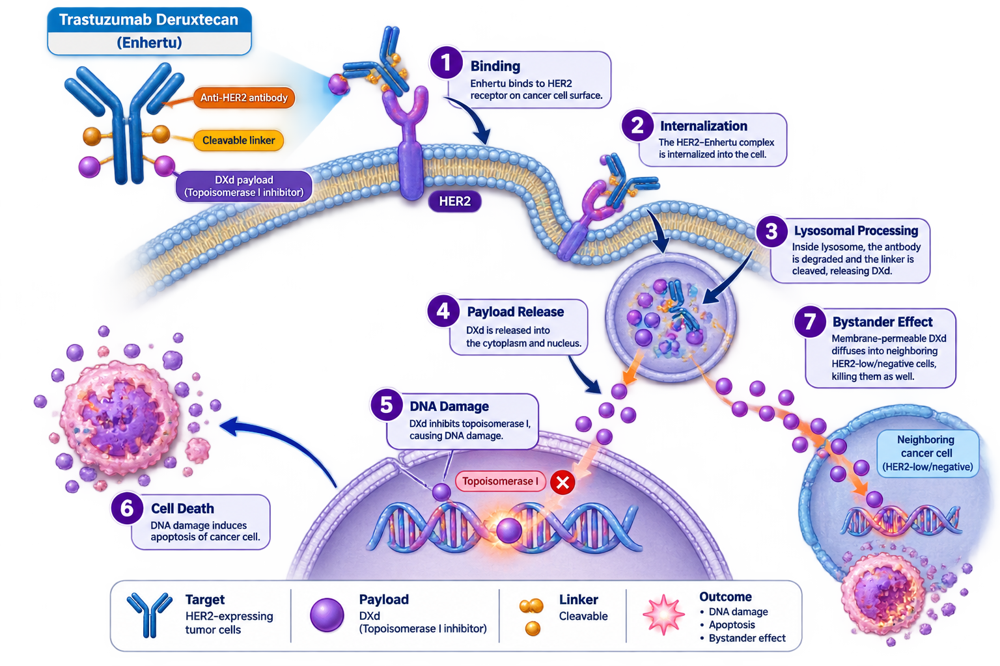

AstraZeneca
Enhertu is a HER2-directed antibody-drug conjugate (ADC) that combines trastuzumab with a topoisomerase I inhibitor payload. It delivers targeted cytotoxic therapy to HER2-expressing tumor cells.
Enhertu
Trastuzumab Deruxtecan
ADC
IV Infusion
AstraZeneca
Enhertu consists of a HER2-targeting monoclonal antibody linked to a topoisomerase I inhibitor payload (DXd). After binding HER2, the complex is internalized, releasing the cytotoxic payload inside tumor cells and inducing DNA damage and apoptosis.

| Trial | Population | Outcome |
|---|---|---|
| DESTINY-Breast03 | HER2+ MBC | Superior PFS vs T-DM1 |
| DESTINY-Breast04 | HER2-Low | OS & PFS Benefit |
| DESTINY-Breast06 | HER2-Ultralow | Significant Clinical Benefit |
Recommended dose: 5.4 mg/kg IV infusion every 3 weeks.